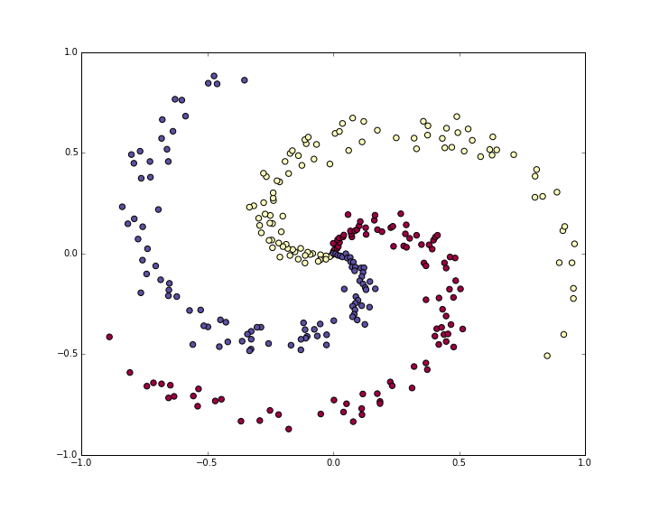
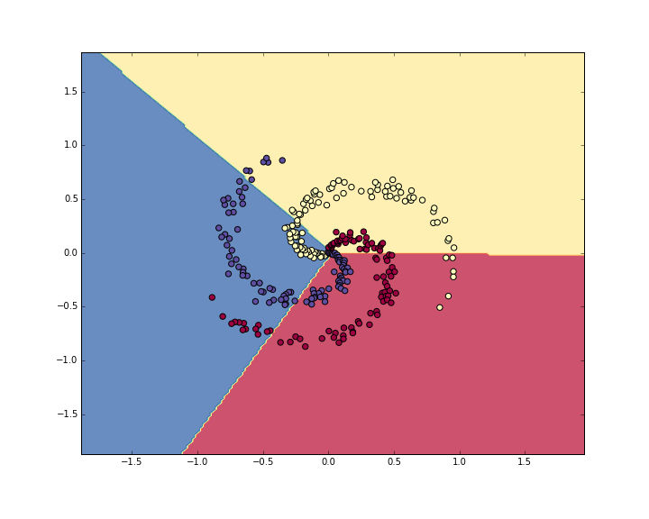

Neural Network classifier crushes the spiral dataset.Table of Contents:
In this section we’ll walk through a complete implementation of a toy Neural Network in 2 dimensions. We’ll first implement a simple linear classifier and then extend the code to a 2-layer Neural Network. As we’ll see, this extension is surprisingly simple and very few changes are necessary.
Lets generate a classification dataset that is not easily linearly separable. Our favorite example is the spiral dataset, which can be generated as follows:
N = 100 # number of points per class
D = 2 # dimensionality
K = 3 # number of classes
X = np.zeros((N*K,D)) # data matrix (each row = single example)
y = np.zeros(N*K, dtype='uint8') # class labels
for j in range(K):
ix = range(N*j,N*(j+1))
r = np.linspace(0.0,1,N) # radius
t = np.linspace(j*4,(j+1)*4,N) + np.random.randn(N)*0.2 # theta
X[ix] = np.c_[r*np.sin(t), r*np.cos(t)]
y[ix] = j
# lets visualize the data:
plt.scatter(X[:, 0], X[:, 1], c=y, s=40, cmap=plt.cm.Spectral)
plt.show()
The toy spiral data consists of three classes (blue, red, yellow) that are not linearly separable.Normally we would want to preprocess the dataset so that each feature has zero mean and unit standard deviation, but in this case the features are already in a nice range from -1 to 1, so we skip this step.
Lets first train a Softmax classifier on this classification dataset.
As we saw in the previous sections, the Softmax classifier has a linear
score function and uses the cross-entropy loss. The parameters of the
linear classifier consist of a weight matrix W and a bias
vector b for each class. Lets first initialize these
parameters to be random numbers:
# initialize parameters randomly
W = 0.01 * np.random.randn(D,K)
b = np.zeros((1,K))Recall that we D = 2 is the dimensionality and
K = 3 is the number of classes.
Since this is a linear classifier, we can compute all class scores very simply in parallel with a single matrix multiplication:
# compute class scores for a linear classifier
scores = np.dot(X, W) + bIn this example we have 300 2-D points, so after this multiplication
the array scores will have size [300 x 3], where each row
gives the class scores corresponding to the 3 classes (blue, red,
yellow).
The second key ingredient we need is a loss function, which is a differentiable objective that quantifies our unhappiness with the computed class scores. Intuitively, we want the correct class to have a higher score than the other classes. When this is the case, the loss should be low and otherwise the loss should be high. There are many ways to quantify this intuition, but in this example lets use the cross-entropy loss that is associated with the Softmax classifier. Recall that if \(f\) is the array of class scores for a single example (e.g. array of 3 numbers here), then the Softmax classifier computes the loss for that example as:
\[ L_i = -\log\left(\frac{e^{f_{y_i}}}{ \sum_j e^{f_j} }\right) \]
We can see that the Softmax classifier interprets every element of \(f\) as holding the (unnormalized) log probabilities of the three classes. We exponentiate these to get (unnormalized) probabilities, and then normalize them to get probabilites. Therefore, the expression inside the log is the normalized probability of the correct class. Note how this expression works: this quantity is always between 0 and 1. When the probability of the correct class is very small (near 0), the loss will go towards (positive) infinity. Conversely, when the correct class probability goes towards 1, the loss will go towards zero because \(log(1) = 0\). Hence, the expression for \(L_i\) is low when the correct class probability is high, and it’s very high when it is low.
Recall also that the full Softmax classifier loss is then defined as the average cross-entropy loss over the training examples and the regularization:
\[ L = \underbrace{ \frac{1}{N} \sum_i L_i }_\text{data loss} + \underbrace{ \frac{1}{2} \lambda \sum_k\sum_l W_{k,l}^2 }_\text{regularization loss} \\\\ \]
Given the array of scores we’ve computed above, we can
compute the loss. First, the way to obtain the probabilities is straight
forward:
num_examples = X.shape[0]
# get unnormalized probabilities
exp_scores = np.exp(scores)
# normalize them for each example
probs = exp_scores / np.sum(exp_scores, axis=1, keepdims=True)We now have an array probs of size [300 x 3], where each
row now contains the class probabilities. In particular, since we’ve
normalized them every row now sums to one. We can now query for the log
probabilities assigned to the correct classes in each example:
correct_logprobs = -np.log(probs[range(num_examples),y])The array correct_logprobs is a 1D array of just the
probabilities assigned to the correct classes for each example. The full
loss is then the average of these log probabilities and the
regularization loss:
# compute the loss: average cross-entropy loss and regularization
data_loss = np.sum(correct_logprobs)/num_examples
reg_loss = 0.5*reg*np.sum(W*W)
loss = data_loss + reg_lossIn this code, the regularization strength \(\) is stored inside the
reg. The convenience factor of 0.5 multiplying
the regularization will become clear in a second. Evaluating this in the
beginning (with random parameters) might give us
loss = 1.1, which is -np.log(1.0/3), since
with small initial random weights all probabilities assigned to all
classes are about one third. We now want to make the loss as low as
possible, with loss = 0 as the absolute lower bound. But
the lower the loss is, the higher are the probabilities assigned to the
correct classes for all examples.
We have a way of evaluating the loss, and now we have to minimize it. We’ll do so with gradient descent. That is, we start with random parameters (as shown above), and evaluate the gradient of the loss function with respect to the parameters, so that we know how we should change the parameters to decrease the loss. Lets introduce the intermediate variable \(p\), which is a vector of the (normalized) probabilities. The loss for one example is:
\[ p_k = \frac{e^{f_k}}{ \sum_j e^{f_j} } \hspace{1in} L_i =-\log\left(p_{y_i}\right) \]
We now wish to understand how the computed scores inside \(f\) should change to decrease the loss \(L_i\) that this example contributes to the full objective. In other words, we want to derive the gradient \( L_i / f_k \). The loss \(L_i\) is computed from \(p\), which in turn depends on \(f\). It’s a fun exercise to the reader to use the chain rule to derive the gradient, but it turns out to be extremely simple and interpretible in the end, after a lot of things cancel out:
\[ \frac{\partial L_i }{ \partial f_k } = p_k - \mathbb{1}(y_i = k) \]
Notice how elegant and simple this expression is. Suppose the
probabilities we computed were p = [0.2, 0.3, 0.5], and
that the correct class was the middle one (with probability 0.3).
According to this derivation the gradient on the scores would be
df = [0.2, -0.7, 0.5]. Recalling what the interpretation of
the gradient, we see that this result is highly intuitive: increasing
the first or last element of the score vector f (the scores
of the incorrect classes) leads to an increased loss (due to
the positive signs +0.2 and +0.5) - and increasing the loss is bad, as
expected. However, increasing the score of the correct class has
negative influence on the loss. The gradient of -0.7 is telling
us that increasing the correct class score would lead to a decrease of
the loss \(L_i\), which makes sense.
All of this boils down to the following code. Recall that
probs stores the probabilities of all classes (as rows) for
each example. To get the gradient on the scores, which we call
dscores, we proceed as follows:
dscores = probs
dscores[range(num_examples),y] -= 1
dscores /= num_examplesLastly, we had that scores = np.dot(X, W) + b, so armed
with the gradient on scores (stored in
dscores), we can now backpropagate into W and
b:
dW = np.dot(X.T, dscores)
db = np.sum(dscores, axis=0, keepdims=True)
dW += reg*W # don't forget the regularization gradientWhere we see that we have backpropped through the matrix multiply
operation, and also added the contribution from the regularization. Note
that the regularization gradient has the very simple form
reg*W since we used the constant 0.5 for its
loss contribution (i.e. \( ( w^2) = w\). This is a common convenience
trick that simplifies the gradient expression.
Now that we’ve evaluated the gradient we know how every parameter influences the loss function. We will now perform a parameter update in the negative gradient direction to decrease the loss:
# perform a parameter update
W += -step_size * dW
b += -step_size * dbPutting all of this together, here is the full code for training a Softmax classifier with Gradient descent:
#Train a Linear Classifier
# initialize parameters randomly
W = 0.01 * np.random.randn(D,K)
b = np.zeros((1,K))
# some hyperparameters
step_size = 1e-0
reg = 1e-3 # regularization strength
# gradient descent loop
num_examples = X.shape[0]
for i in range(200):
# evaluate class scores, [N x K]
scores = np.dot(X, W) + b
# compute the class probabilities
exp_scores = np.exp(scores)
probs = exp_scores / np.sum(exp_scores, axis=1, keepdims=True) # [N x K]
# compute the loss: average cross-entropy loss and regularization
correct_logprobs = -np.log(probs[range(num_examples),y])
data_loss = np.sum(correct_logprobs)/num_examples
reg_loss = 0.5*reg*np.sum(W*W)
loss = data_loss + reg_loss
if i % 10 == 0:
print "iteration %d: loss %f" % (i, loss)
# compute the gradient on scores
dscores = probs
dscores[range(num_examples),y] -= 1
dscores /= num_examples
# backpropate the gradient to the parameters (W,b)
dW = np.dot(X.T, dscores)
db = np.sum(dscores, axis=0, keepdims=True)
dW += reg*W # regularization gradient
# perform a parameter update
W += -step_size * dW
b += -step_size * dbRunning this prints the output:
iteration 0: loss 1.096956
iteration 10: loss 0.917265
iteration 20: loss 0.851503
iteration 30: loss 0.822336
iteration 40: loss 0.807586
iteration 50: loss 0.799448
iteration 60: loss 0.794681
iteration 70: loss 0.791764
iteration 80: loss 0.789920
iteration 90: loss 0.788726
iteration 100: loss 0.787938
iteration 110: loss 0.787409
iteration 120: loss 0.787049
iteration 130: loss 0.786803
iteration 140: loss 0.786633
iteration 150: loss 0.786514
iteration 160: loss 0.786431
iteration 170: loss 0.786373
iteration 180: loss 0.786331
iteration 190: loss 0.786302We see that we’ve converged to something after about 190 iterations. We can evaluate the training set accuracy:
# evaluate training set accuracy
scores = np.dot(X, W) + b
predicted_class = np.argmax(scores, axis=1)
print 'training accuracy: %.2f' % (np.mean(predicted_class == y))This prints 49%. Not very good at all, but also not surprising given that the dataset is constructed so it is not linearly separable. We can also plot the learned decision boundaries:

Linear classifier fails to learn the toy spiral dataset.Clearly, a linear classifier is inadequate for this dataset and we would like to use a Neural Network. One additional hidden layer will suffice for this toy data. We will now need two sets of weights and biases (for the first and second layers):
# initialize parameters randomly
h = 100 # size of hidden layer
W = 0.01 * np.random.randn(D,h)
b = np.zeros((1,h))
W2 = 0.01 * np.random.randn(h,K)
b2 = np.zeros((1,K))The forward pass to compute scores now changes form:
# evaluate class scores with a 2-layer Neural Network
hidden_layer = np.maximum(0, np.dot(X, W) + b) # note, ReLU activation
scores = np.dot(hidden_layer, W2) + b2Notice that the only change from before is one extra line of code, where we first compute the hidden layer representation and then the scores based on this hidden layer. Crucially, we’ve also added a non-linearity, which in this case is simple ReLU that thresholds the activations on the hidden layer at zero.
Everything else remains the same. We compute the loss based on the
scores exactly as before, and get the gradient for the scores
dscores exactly as before. However, the way we
backpropagate that gradient into the model parameters now changes form,
of course. First lets backpropagate the second layer of the Neural
Network. This looks identical to the code we had for the Softmax
classifier, except we’re replacing X (the raw data), with
the variable hidden_layer):
# backpropate the gradient to the parameters
# first backprop into parameters W2 and b2
dW2 = np.dot(hidden_layer.T, dscores)
db2 = np.sum(dscores, axis=0, keepdims=True)However, unlike before we are not yet done, because
hidden_layer is itself a function of other parameters and
the data! We need to continue backpropagation through this variable. Its
gradient can be computed as:
dhidden = np.dot(dscores, W2.T)Now we have the gradient on the outputs of the hidden layer. Next, we have to backpropagate the ReLU non-linearity. This turns out to be easy because ReLU during the backward pass is effectively a switch. Since \(r = max(0, x)\), we have that \( = 1(x > 0) \). Combined with the chain rule, we see that the ReLU unit lets the gradient pass through unchanged if its input was greater than 0, but kills it if its input was less than zero during the forward pass. Hence, we can backpropagate the ReLU in place simply with:
# backprop the ReLU non-linearity
dhidden[hidden_layer <= 0] = 0And now we finally continue to the first layer weights and biases:
# finally into W,b
dW = np.dot(X.T, dhidden)
db = np.sum(dhidden, axis=0, keepdims=True)We’re done! We have the gradients dW,db,dW2,db2 and can
perform the parameter update. Everything else remains unchanged. The
full code looks very similar:
# initialize parameters randomly
h = 100 # size of hidden layer
W = 0.01 * np.random.randn(D,h)
b = np.zeros((1,h))
W2 = 0.01 * np.random.randn(h,K)
b2 = np.zeros((1,K))
# some hyperparameters
step_size = 1e-0
reg = 1e-3 # regularization strength
# gradient descent loop
num_examples = X.shape[0]
for i in range(10000):
# evaluate class scores, [N x K]
hidden_layer = np.maximum(0, np.dot(X, W) + b) # note, ReLU activation
scores = np.dot(hidden_layer, W2) + b2
# compute the class probabilities
exp_scores = np.exp(scores)
probs = exp_scores / np.sum(exp_scores, axis=1, keepdims=True) # [N x K]
# compute the loss: average cross-entropy loss and regularization
correct_logprobs = -np.log(probs[range(num_examples),y])
data_loss = np.sum(correct_logprobs)/num_examples
reg_loss = 0.5*reg*np.sum(W*W) + 0.5*reg*np.sum(W2*W2)
loss = data_loss + reg_loss
if i % 1000 == 0:
print "iteration %d: loss %f" % (i, loss)
# compute the gradient on scores
dscores = probs
dscores[range(num_examples),y] -= 1
dscores /= num_examples
# backpropate the gradient to the parameters
# first backprop into parameters W2 and b2
dW2 = np.dot(hidden_layer.T, dscores)
db2 = np.sum(dscores, axis=0, keepdims=True)
# next backprop into hidden layer
dhidden = np.dot(dscores, W2.T)
# backprop the ReLU non-linearity
dhidden[hidden_layer <= 0] = 0
# finally into W,b
dW = np.dot(X.T, dhidden)
db = np.sum(dhidden, axis=0, keepdims=True)
# add regularization gradient contribution
dW2 += reg * W2
dW += reg * W
# perform a parameter update
W += -step_size * dW
b += -step_size * db
W2 += -step_size * dW2
b2 += -step_size * db2This prints:
iteration 0: loss 1.098744
iteration 1000: loss 0.294946
iteration 2000: loss 0.259301
iteration 3000: loss 0.248310
iteration 4000: loss 0.246170
iteration 5000: loss 0.245649
iteration 6000: loss 0.245491
iteration 7000: loss 0.245400
iteration 8000: loss 0.245335
iteration 9000: loss 0.245292The training accuracy is now:
# evaluate training set accuracy
hidden_layer = np.maximum(0, np.dot(X, W) + b)
scores = np.dot(hidden_layer, W2) + b2
predicted_class = np.argmax(scores, axis=1)
print 'training accuracy: %.2f' % (np.mean(predicted_class == y))Which prints 98%!. We can also visualize the decision boundaries:
Neural Network classifier crushes the spiral dataset.We’ve worked with a toy 2D dataset and trained both a linear network and a 2-layer Neural Network. We saw that the change from a linear classifier to a Neural Network involves very few changes in the code. The score function changes its form (1 line of code difference), and the backpropagation changes its form (we have to perform one more round of backprop through the hidden layer to the first layer of the network).